R/optimise_window_length.R
optimise_window_length.RdThis function optimises the number of elements per window that is used in calculate_expression_similarity_counts(), by requiring the distribution of correlations/distances to stabilise to a uniform distribution. The Jensen-Shannon divergence is used to assess the stability.
optimise_window_length( expression.matrix, similarity.measure = "correlation_pearson", window.length.min = NULL, window.length.max = NULL, window.length.by = NULL, n.step.fraction = 0.05, iteration.number = 50, minimum.similar.windows = 3, save.plot = NULL )
| expression.matrix | expression matrix, can be normalized or not |
|---|---|
| similarity.measure | one of the correlation or distance metrics to be used, defaults to pearson correlation; list of all methods in get_methods_correlation_distance() |
| window.length.min, window.length.max, window.length.by | definition of the parameter search space; default is between 1% and 33% of the number of rows in the expression matrix, incremented by 1% |
| n.step.fraction | step size to slide across, as a fraction of the window length; default is 5% |
| iteration.number | number of iterations for the subsampling and calculation of JSE; subsampling is needed because shorter windows have fewer points; default is 100 |
| minimum.similar.windows | number of windows that a window needs to be similar to (including itself) in order to be accepted as optimal; default is 3, but can be reduced to 2 if no optimum is found |
| save.plot | name of the pdf in which to print the output plot showing the distribution of JSE by window; output to the console by default |
A single value of the optimal number of elements per window. If no optimal value was found, this function returns NULL.
optimise_window_length( matrix(1:100+runif(100), ncol=5, byrow=TRUE), window.length.min=3, window.length.max=5, iteration.number=5)#>#>#>#>#>#>#>#>#>#>#>#>#>#>#>#> NULL